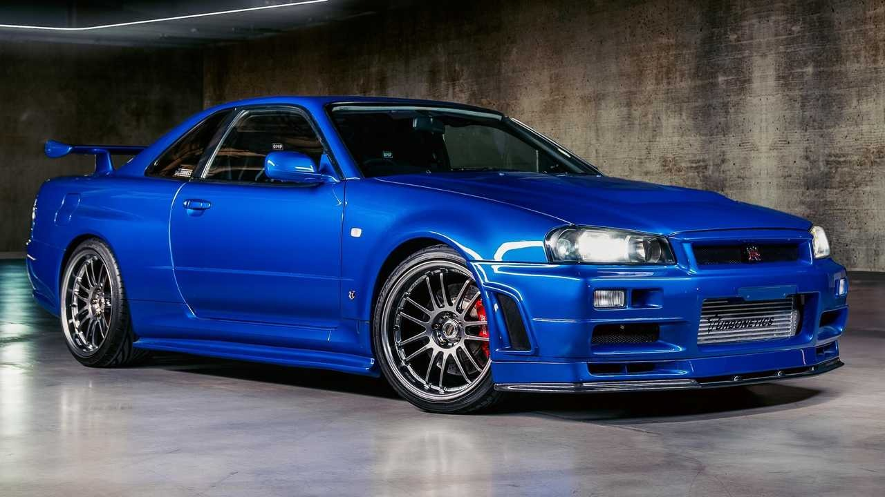
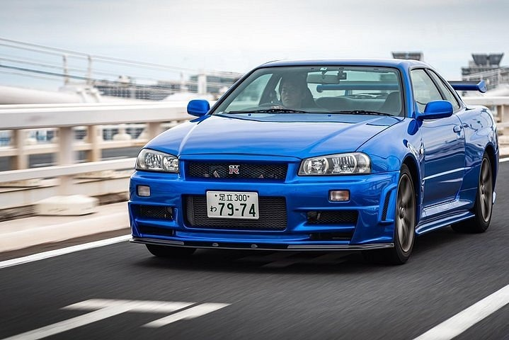
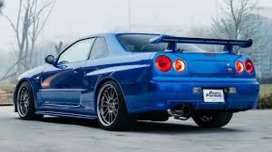

El Skyline fue creado como un vehículo para la familia, ya que era un sedán de cuatro puertas, con una gran capacidad de carga y un equipamiento de seguridad muy completo. A pesar de esto, a medida que fue pasando el tiempo se le dotó de un carácter más deportivo, puesto que enseguida fue lanzado en su versión cupé y más adelante el conocido GT-R.
En 1995 se denominó el Skyline GT-R R32, creándose posteriormente diferentes versiones mejoradas. En 1996 Nissan introdujo el modelo GT-R R33, mucho más largo que su predecesor y además equipado con un LSD activo. Las medidas de los modelos
R32 y R33 hacían que no fueran tan competitivos y eso obligó a los Nissan a rediseñar el auto para el lanzamiento de la siguiente versión, el R34.



Por qué es uno de los carros más deseados
El Nissan Skyline GT-R R34 es uno de los autos más deseados y admirados por varias razones:
Herencia y legado : El Skyline GT-R tiene una rica historia en el mundo del automovilismo, especialmente en Japón, donde ha ganado numerosas competiciones de carreras como el campeonato japonés de turismos (JGTC) y el famoso circuito de Nürburgring en Alemania. Esta herencia de rendimiento y éxito en la pista ha contribuido a su estatus legendario.
Tecnología innovadora: El R34 introdujo varias tecnologías innovadoras en su época, como el sistema de tracción integral ATTESA-ETS y el sistema de dirección de las cuatro ruedas Super HICAS, que mejoraron significativamente la estabilidad y el manejo del automóvil.
Rendimiento sobresaliente: Equipado con un motor RB26DETT de seis cilindros en línea y doble turboalimentado, el Skyline GT-R R34 produce una potencia impresionante y ofrece un rendimiento excepcional en carretera y pista. Su capacidad para alcanzar altas velocidades y su manejo ágil lo convierten en una máquina formidable.
Estética atractiva: El diseño aerodinámico y agresivo del R34, con sus líneas angulares y su distintivo alerón trasero, ha capturado la imaginación de entusiastas del automóvil en todo el mundo. Es considerado por muchos como uno de los automóviles japoneses más icónicos en términos de diseño.
Rareza y exclusividad: Aunque el Skyline GT-R R34 fue producido en cantidades relativamente grandes en comparación con algunos superdeportivos exóticos, su disponibilidad en muchos mercados, especialmente fuera de Japón, es limitada debido a restricciones de importación y su estatus de vehículo de colección. Esto ha aumentado su atractivo entre los coleccionistas y entusiastas del automovilismo.
.png)